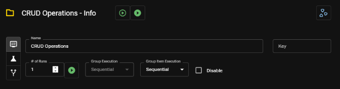

Request Groups
Info Pane
In Apicize, a Request Group is a list of Requests and/or child Groups. Request Groups do more than organize requests, they can be used to orchestrate tests with dependencies and/or load testing.
Any child Requests or Groups will, by default, inherit the parent group's execution parameters (scenario, authorization, etc.)

Group Properties
- Name: Human-readable reference to the group
- Key: Optional identifier of the group in testing output (use this to reference test plan identifiers)
- # of Runs: The number of times the Group will execute (unless using the "Run Once" button)
- Group Execution: Specifies whether multiple runs of the group will run sequentially or concurrently
- Group Item Execution: Specifies whehter children within the group will run sequentially or concurrently
- Disable: Disables the Group from being executed when running the workbook from the Apicize CLI or as a child of another group (it can still be executed directly in the UI)
